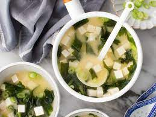

Miso Soup

Description
Miso Soup is a delicious, warming and savoury dish that can seem difficult to make on your own at home. Today, we will go over some simple ingredients and instructions to make miso soup all by yourself! This gives you an excellent dish to make at home without the financial burden of going out to a exotic restaurant. Let's get started!
Ingredients
- Kombu Kelp - This will be used to make a very simple and quick broth named dashi
- White Miso Paste - Generally the sweetest tasting miso paste, making it perfect for Miso Soup.
- Silken Tofu - Ideal because of its super-smooth texture.
- Wakame - Dried seaweed that expands like crazy once soaked in warm water.
- Scallions - Add texture and onion flavour.
- Tamari - A sauce that gives extra flavour for serving.